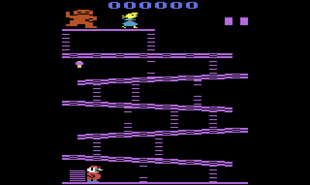
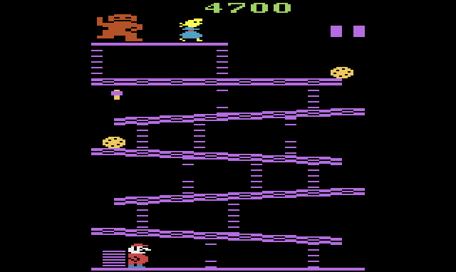
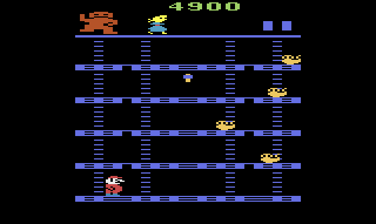
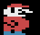
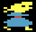

Donkey Kong
Garry Kitchen's two-screen Donkey Kong for the Atari 2600. The cartridge's own program, translated into JavaScript one instruction at a time with every cycle counted, so each barrel, jump and ladder plays exactly as it did on the console.

How to play
Get Mario to the top. On the barrel screen that means climbing to Pauline; on the rivet screen it means pulling all eight rivets by walking over them. Touch a barrel or a firefox and Mario is gone. The clock is running too: the number at the top is your bonus, and when it reaches zero you lose a life.
At the controls
- Walk←→ or AD
- Climb↑↓ or WS
- JumpSpace / Z
- Game ResetEnter
- Pause · MuteP · M
On a gamepad
- The joystickstick or D-pad
- JumpA · B · X · Y
- Game ResetStart
- PauseBack
After Game Reset the cartridge plays its tune; press the button once it ends. Sound starts after your first click or key press, which is the browser's rule, not the cartridge's.
Bonus and lives
Each screen starts with a bonus of 5000 that drops by 100 about every two seconds. Whatever is left is added to your score when you finish the screen.
You have three Marios: the one playing and the squares at the top right.


Who's who

Mario
Walks one pixel every three frames. A jump lifts him 7 lines and holds him there for 31 frames, then drops him back: no arc, and he keeps going whichever way you pushed when he took off.
Barrel 100
Jump one for 100 points. Up to four barrels or firefoxes are on the screen at once.
Firefox 100
The rivet screen's enemy. Each one starts at a random spot, heading a random way.
Hammer 800
Jump into it to grab it. While you hold it, anything it hits is smashed for 800 points, but you cannot climb until it wears off.
Donkey Kong
Drawn with the player graphics stretched to double width, on the top line of every screen.

Pauline
Colored line by line from her own table, which is how one sprite gets blonde hair and a blue dress.
Built from the ROM
This is not an emulator, and not a remake. A translator read the cartridge's 6502 code, using Dennis Debro's disassembly for labels and comments, and wrote out each instruction as a line of JavaScript with its cycle count. The translated game runs on a model of the 2600's TIA and RIOT chips, and a 6502 core runs the real ROM beside it to prove the two match.
- The number at the top is the bonus while you play. Your score only shows, in blue, between screens and after the game.
- The score is kept in hundreds: the last two zeros are never stored.
- Mario dies by hardware: the TIA's collision latch between his sprite and the obstacles is the only test.
- You pick up the hammer the same way, through the collision latch for the hammer's sprite, and only while jumping.
- Leave the game alone and the colors start cycling, to keep a still picture from burning into the TV.
Developer pages
- Game only: the player on a page of its own
- Verifying against the ROM: the translator, the 6502 oracle and the comparison scripts